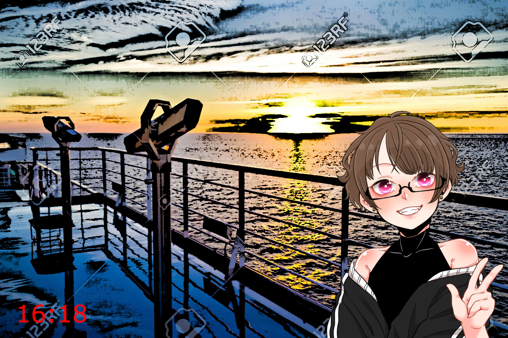

Tips
・11:30 九条の部屋で毒島が先に入室していた。
・11:30 クルスさんの父親はマフィアの首領エンリケ、母親はルシアナ・リタ
・12:30 回収されていた拳銃の一つは警察の銃
・12:30 毒島は九条の弱みを探っていた、しかし何も掴めていない様子
・16:18 デッキで写真撮影

・16:30 - 17:00 気絶していた。意識は無かった。
追加Tips
・自分は九条に雇われた探偵で、九条は誰かに狙われていた。
その人物の特定が今回の依頼内容(2R)
・14:00 九条から毒島に狙われているとの連絡があった。（2R)